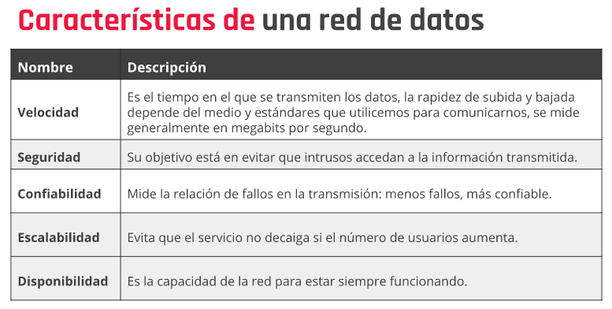

Redes
Las Redes son el conjunto de dispositivos conectados entre sí y que envían y reciben datos para compartir información y recursos.
Las Redes las podemos clasificar por:
- PAN: Personal Area Network. Bluetooth, smart tv.
- LAN: Local Area Network. Cubre áreas geográficas pequeñas.
- MAN: Metropolitan Área Network. Ciudades, 50/60 km. Interconecta varias LAN.
- WAN: Wide Area Network. De 100 a 1000 km.
- Cableadas: Utilizan componentes físicos. Par trenzado (más usado), cable coaxial, fibra óptica.
- Inalámbricas: Se propagan a través del aire. Infrarrojo, bluetooth, wifi.
Medios de Transmisión
Medios guiados: Están constituidos por cables como pares trenzados, cable coaxial, fibra óptica.
Medios no guiados: Transmiten la información por antenas como Bluetooth, señales de infrarrojo, señales de wifi.
Velocidad de Internet:
Característica de una red de datos:

Armando nuestra propia red:
- Enlistar los dispositivos que se van a conectar a la red.
- Cuales de esos necesitan conexión cableada y cuales inalámbrica (la cableada es más performante y segura).
- Croquis de red cableada.
- Diseño de red, ubicar estratégicamente el router con modem integrado.
- Ubicar el router, medir las distancias cableadas y ubicar los cables de red (tipo utp categoría 5 o 6 con dos fichas rj45).
- Se conecta el cable de la red WAN (externa) al router. En las bocas del router se conectan.